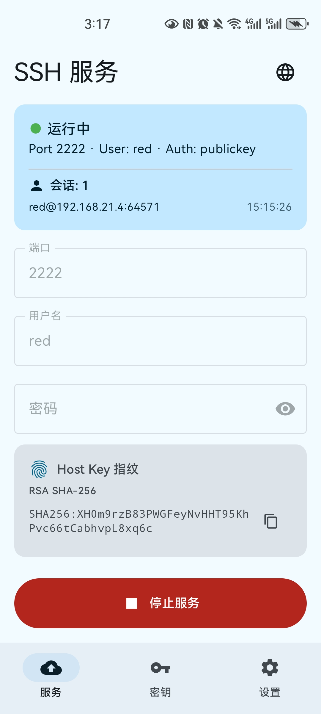
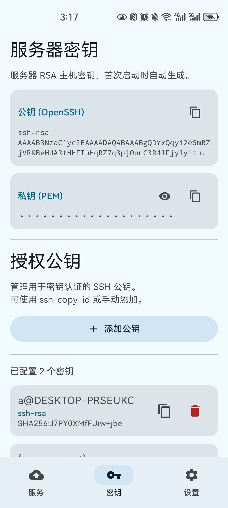
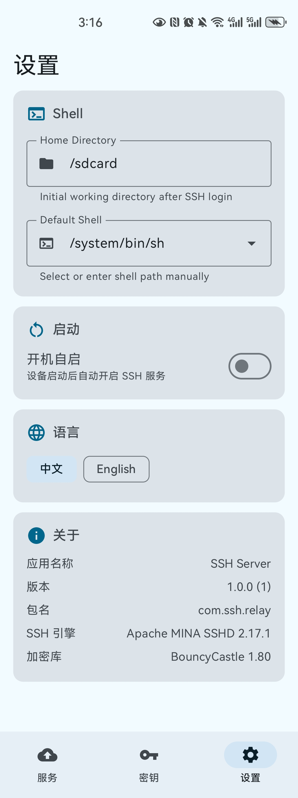

>_ SSH Server
Android SSH 服务器应用，把手机变成移动的服务器 / 跳板机。

基于 Apache MINA SSHD 2.17.1，在手机上运行完整的 SSH 服务器。
将手机作为 SSH 跳板机 (ssh -J)，随时随地中继连接。
内置 SFTP 子系统，安全传输文件到手机或从手机传出。
支持公钥认证和 ssh-copy-id，也可选密码认证。
JNI 原生 PTY 支持 (/dev/ptmx)，完整的交互式终端体验。
前台服务 + WakeLock + WifiLock，切换应用或熄屏不断连。
可选开机后自动启动 SSH 服务，无需手动操作。
运行时中英文界面即时切换，Material 3 动态主题。
实时显示活跃 SSH 会话，内置 keepalive 保活机制。



1. 安装 APK，打开应用
2. 配置用户名 / 密码 / 端口（默认 red / 空 / 2222）
3. 点击「启动服务」
4. 从电脑连接：
# SSH
ssh -p 2222 red@<phone-ip>
# 公钥认证 / Key auth
ssh-copy-id -p 2222 red@<phone-ip>
# 跳板机 / Jump host
ssh -J red@<phone-ip>:2222 user@target
# SFTP
sftp -P 2222 red@<phone-ip>
| 组件 | 版本 |
|---|---|
| Apache MINA SSHD | 2.17.1 |
| BouncyCastle | 1.80 |
| Jetpack Compose + Material 3 | BOM 2024.12.01 |
| Kotlin | 2.1.0 |
| Android SDK | 35 (min 26) |
| NDK / CMake | 27 / 3.22.1 |